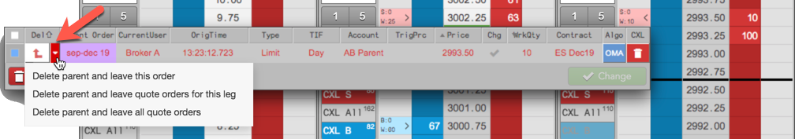
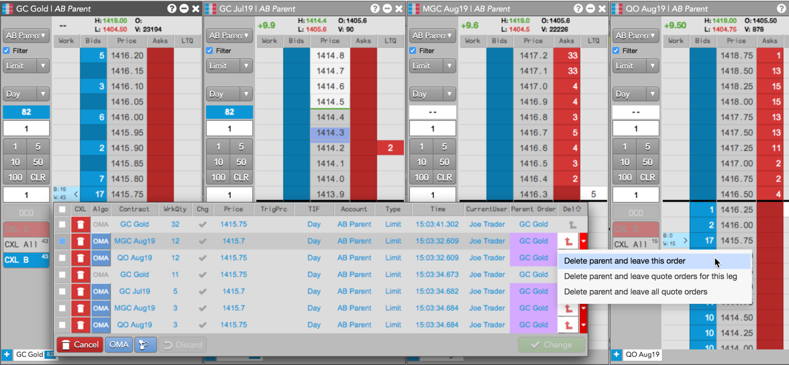

Using the "Delete parent..." options in the Floating Order Book, you have the ability to delete a parent Autospreader or Aggregator order and leave the related child orders working in the market. You can use this option for a single order, all quote orders on a specific leg, or quote orders for all legs.
When you delete the parent order, Autospreader or Aggregator will abandon and no longer manage the child order, and Autospreader will not send hedge orders if the abandoned order is filled.
To delete parent orders in the Floating Order Book

Note: For Aggregator orders, you can launch the Floating Order Book from the parent order for the aggregated instrument and view all related child orders for each leg.
